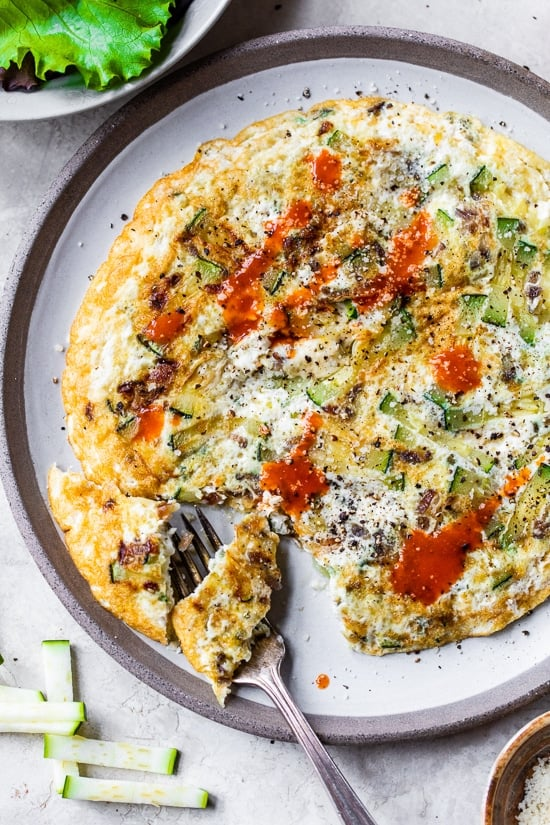

High Protein Omelet Recipe

Description
Looking for a nutritious and satisfying breakfast, snack or meal option that will keep you fueled for hours?
Try our high-protein omelet recipe! Packed with protein and flavor, this delicious omelet is easy to make
and customizable to suit your taste preferences. Whether you're following a high-protein diet or simply
looking for a hearty breakfast idea, this recipe is sure to become a favorite.
Ingredients
- 3 eggs
- S&P to taste (and any other herbs if desired)
- Veggies of choice (I like spinach and broccoli. Corn or kale would work well too.)
- 1 tbsp pesto
- Low fat mozerella (or any cheese of choice)
- Siracha to top (optional)
Steps
- If using frozen veg, thaw out (I put in the microwave for 2 mins). Chop them up
- Crack 3 eggs into a bowl, add S&P and whisk up well
- To a pan, add the pesto, spread about and wait till heated
- Add egg mizture and evenly spread veggies on top
- Cover pan with a lid. Cook on medium for 5 ish mins?
- Flip omelete. Sprinkle cheese on top and cover with lid again
- Once both sides are cooked, serve up on a plate with siracha on top.
- Devour